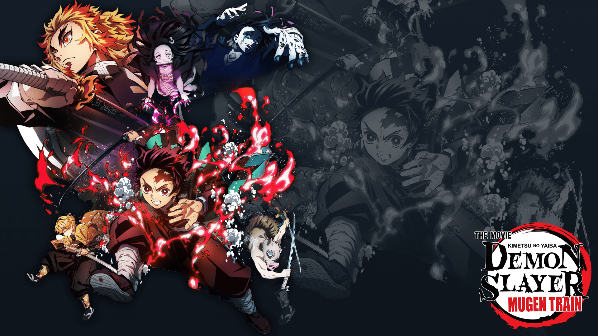

Tanjiro Kamado (竈門 炭治郎 Kamado Tanjirō?) é o protagonista principal de Demon Slayer: Kimetsu no Yaiba. Ele é um Caçador de Oni do Esquadrão de Caçadores de Onis, que se juntou para encontrar um remédio para transformar sua irmã, Nezuko Kamado, que foi transformada em um Oni, de volta em um humano.
Antes de se tornar um Caçador de Oni, sua família foi massacrada pelo Rei dos Onis, Muzan Kibutsuji, enquanto sua irmã mais nova, Nezuko, foi transformada em uma Oni.
Zenitsu Agatsuma, (我妻 善逸 Agatsuma Zen'itsu?) é um dos principais protagonistas de Demon Slayer: Kimetsu no Yaiba. Ele é um Caçador de Oni no Esquadrão de Caçadores de Oni.
Inosuke Hashibira (Hashibira Inosuke?) é um Caçador de Demônios, sendo um dos amigos e companheiro de viagem de Tanjiro Kamado e um dos principais protagonistas de Kimetsu no Yaiba: Demon Slayer.
Inosuke é um jovem extremamente temperamental e orgulhoso que sempre gosta de pensar que é o lutador mais forte em uma situação, desafiando constantemente a maioria das pessoas que ele encontra e querendo que os outros o respeitem e o elogiem por sua habilidade.
Nezuko Kamado (竈門 禰豆子 Kamado Nezuko?) é a deuteragonista de Demon Slayer: Kimetsu no Yaiba. Ela é um Oni, irmã mais nova de Tanjiro Kamado e um dos dois membros restantes da família Kamado. Inicialmente sendo um ser humano, ela foi atacada e transformada em Oni por Muzan Kibutsuji.